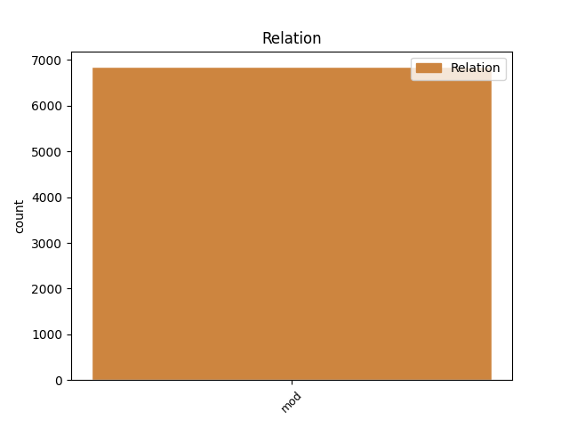
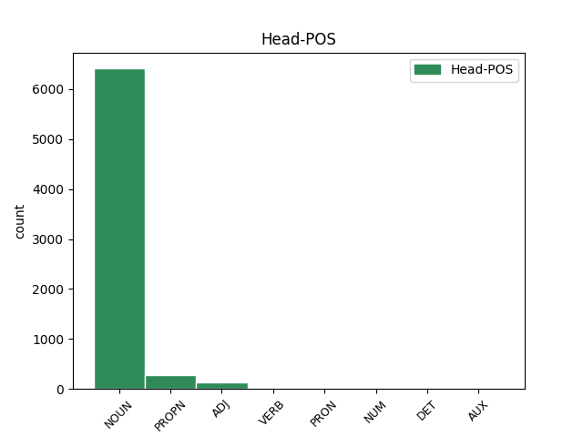
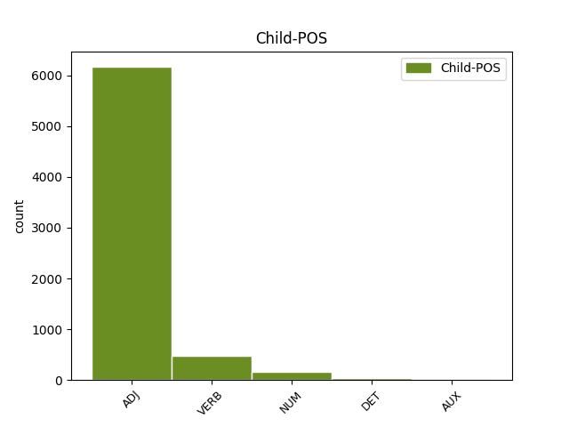

Distribution of features within this leaf



Agreement Rules sorted by frequency.
- When the dependent token is the modifer(mod) of the head token, and the dependent token is ADJ.
1 В _ _ _ _ 0 _ _ _
2 те _ _ _ _ 0 _ _ _
3 годы _ _ _ _ 0 _ _ _
4 в _ _ _ _ 0 _ _ _
5 селе _ _ _ _ 0 _ _ _
6 был _ _ _ _ 0 _ _ _
7 птичник _ _ _ _ 0 _ _ _
8 и _ _ _ _ 0 _ _ _
9 разбит _ _ _ _ 0 _ _ _
10 колхозный колхозный ADJ JJL Case=Nom|Degree=Pos|Gender=Masc|Number=Sing 11 mod _ _
11 сад сад NOUN NN Animacy=Inan|Case=Nom|Gender=Masc|Number=Sing 0 _ _ _
12 . _ _ _ _ 0 _ _ _
1 Он _ _ _ _ 0 _ _ _
2 часто _ _ _ _ 0 _ _ _
3 заявляет _ _ _ _ 0 _ _ _
4 про _ _ _ _ 0 _ _ _
5 заговоры _ _ _ _ 0 _ _ _
6 феминисток _ _ _ _ 0 _ _ _
7 , _ _ _ _ 0 _ _ _
8 утверждая _ _ _ _ 0 _ _ _
9 , _ _ _ _ 0 _ _ _
10 что _ _ _ _ 0 _ _ _
11 последние _ _ _ _ 0 _ _ _
12 -- _ _ _ _ 0 _ _ _
13 воплощение воплощение NOUN NN Animacy=Inan|Case=Nom|Gender=Neut|Number=Sing 0 _ _ _
14 зла _ _ _ _ 0 _ _ _
15 , _ _ _ _ 0 _ _ _
16 стремящееся стремиться VERB VBNL Animacy=Inan|Aspect=Imp|Case=Nom|Gender=Neut|Number=Sing|Tense=Pres|VerbForm=Part|Voice=Act 13 mod _ _
17 править _ _ _ _ 0 _ _ _
18 миром _ _ _ _ 0 _ _ _
19 ( _ _ _ _ 0 _ _ _
20 впоследствии _ _ _ _ 0 _ _ _
21 выясняется _ _ _ _ 0 _ _ _
22 , _ _ _ _ 0 _ _ _
23 что _ _ _ _ 0 _ _ _
24 этим _ _ _ _ 0 _ _ _
25 он _ _ _ _ 0 _ _ _
26 объясняет _ _ _ _ 0 _ _ _
27 свою _ _ _ _ 0 _ _ _
28 усталость _ _ _ _ 0 _ _ _
29 после _ _ _ _ 0 _ _ _
30 близости _ _ _ _ 0 _ _ _
31 со _ _ _ _ 0 _ _ _
32 своей _ _ _ _ 0 _ _ _
33 бывшей _ _ _ _ 0 _ _ _
34 девушкой _ _ _ _ 0 _ _ _
35 за _ _ _ _ 0 _ _ _
36 год _ _ _ _ 0 _ _ _
37 до _ _ _ _ 0 _ _ _
38 основного _ _ _ _ 0 _ _ _
39 сюжета _ _ _ _ 0 _ _ _
40 ) _ _ _ _ 0 _ _ _
41 , _ _ _ _ 0 _ _ _
42 и _ _ _ _ 0 _ _ _
43 прочие _ _ _ _ 0 _ _ _
44 бессмысленности _ _ _ _ 0 _ _ _
45 , _ _ _ _ 0 _ _ _
46 возможно _ _ _ _ 0 _ _ _
47 , _ _ _ _ 0 _ _ _
48 соревнуясь _ _ _ _ 0 _ _ _
49 с _ _ _ _ 0 _ _ _
50 Рин _ _ _ _ 0 _ _ _
51 в _ _ _ _ 0 _ _ _
52 `` _ _ _ _ 0 _ _ _
53 исключительности _ _ _ _ 0 _ _ _
54 '' _ _ _ _ 0 _ _ _
55 . _ _ _ _ 0 _ _ _
1 Цветки _ _ _ _ 0 _ _ _
2 с _ _ _ _ 0 _ _ _
3 тонким _ _ _ _ 0 _ _ _
4 дневным _ _ _ _ 0 _ _ _
5 ароматом _ _ _ _ 0 _ _ _
6 , _ _ _ _ 0 _ _ _
7 около _ _ _ _ 0 _ _ _
8 3,1 3,1 NUM CD Animacy=Inan|Case=Gen|Gender=Masc|Number=Sing|NumType=Card 9 mod _ _
9 см см NOUN NN Animacy=Inan|Case=Gen|Gender=Masc|Number=Sing 0 _ _ _
10 в _ _ _ _ 0 _ _ _
11 диаметре _ _ _ _ 0 _ _ _
12 . _ _ _ _ 0 _ _ _
1 После _ _ _ _ 0 _ _ _
2 такого такой DET DT Case=Gen|Gender=Masc|Number=Sing 3 mod _ _
3 успеха успех NOUN NN Animacy=Inan|Case=Gen|Gender=Masc|Number=Sing 0 _ _ _
4 Лыонга _ _ _ _ 0 _ _ _
5 перевели _ _ _ _ 0 _ _ _
6 в _ _ _ _ 0 _ _ _
7 основную _ _ _ _ 0 _ _ _
8 команду _ _ _ _ 0 _ _ _
9 . _ _ _ _ 0 _ _ _
1 В _ _ _ _ 0 _ _ _
2 середине _ _ _ _ 0 _ _ _
3 июня _ _ _ _ 0 _ _ _
4 1815 _ _ _ _ 0 _ _ _
5 года _ _ _ _ 0 _ _ _
6 великая _ _ _ _ 0 _ _ _
7 княгиня _ _ _ _ 0 _ _ _
8 Екатерина _ _ _ _ 0 _ _ _
9 Павловна _ _ _ _ 0 _ _ _
10 ( _ _ _ _ 0 _ _ _
11 сестра _ _ _ _ 0 _ _ _
12 Александра _ _ _ _ 0 _ _ _
13 I _ _ _ _ 0 _ _ _
14 ) _ _ _ _ 0 _ _ _
15 представила _ _ _ _ 0 _ _ _
16 Леопольда _ _ _ _ 0 _ _ _
17 принцессе _ _ _ _ 0 _ _ _
18 Шарлотте _ _ _ _ 0 _ _ _
19 , _ _ _ _ 0 _ _ _
20 дочери _ _ _ _ 0 _ _ _
21 принца _ _ _ _ 0 _ _ _
22 Уэльского _ _ _ _ 0 _ _ _
23 , _ _ _ _ 0 _ _ _
24 старшего _ _ _ _ 0 _ _ _
25 сына сын NOUN NN Animacy=Anim|Case=Gen|Gender=Masc|Number=Sing 0 _ _ _
26 короля _ _ _ _ 0 _ _ _
27 Георга _ _ _ _ 0 _ _ _
28 III _ _ _ _ 0 _ _ _
29 , _ _ _ _ 0 _ _ _
30 бывшего быть AUX VBNL Animacy=Anim|Aspect=Imp|Case=Gen|Gender=Masc|Number=Sing|Tense=Past|VerbForm=Part|Voice=Act 25 mod _ _
31 регентом _ _ _ _ 0 _ _ _
32 при _ _ _ _ 0 _ _ _
33 душевнобольном _ _ _ _ 0 _ _ _
34 отце _ _ _ _ 0 _ _ _
35 . _ _ _ _ 0 _ _ _
Disagree Examples:
1 Фрэ́нсис _ _ _ _ 0 _ _ _
2 Бэй _ _ _ _ 0 _ _ _
3 ( _ _ _ _ 0 _ _ _
4 ) _ _ _ _ 0 _ _ _
5 , _ _ _ _ 0 _ _ _
6 в _ _ _ _ 0 _ _ _
7 девичестве _ _ _ _ 0 _ _ _
8 -- _ _ _ _ 0 _ _ _
9 Го́ффман _ _ _ _ 0 _ _ _
10 ( _ _ _ _ 0 _ _ _
11 ; _ _ _ _ 0 _ _ _
12 23 _ _ _ _ 0 _ _ _
13 января январь NOUN NN Animacy=Inan|Case=Gen|Gender=Masc|Number=Sing 0 _ _ _
14 1919 _ _ _ _ 0 _ _ _
15 `` _ _ _ _ 0 _ _ _
16 Альберта _ _ _ _ 0 _ _ _
17 , _ _ _ _ 0 _ _ _
18 Канада _ _ _ _ 0 _ _ _
19 -- _ _ _ _ 0 _ _ _
20 15 15 ADJ ORD Case=Nom|Degree=Pos|Gender=Neut|Number=Sing 13 mod _ _
21 сентября _ _ _ _ 0 _ _ _
22 2011 _ _ _ _ 0 _ _ _
23 `` _ _ _ _ 0 _ _ _
24 Лос-Анджелес _ _ _ _ 0 _ _ _
25 , _ _ _ _ 0 _ _ _
26 Калифорния _ _ _ _ 0 _ _ _
27 , _ _ _ _ 0 _ _ _
28 США _ _ _ _ 0 _ _ _
29 ) _ _ _ _ 0 _ _ _
30 -- _ _ _ _ 0 _ _ _
31 канадо-американская _ _ _ _ 0 _ _ _
32 актриса _ _ _ _ 0 _ _ _
33 . _ _ _ _ 0 _ _ _
1 Нас _ _ _ _ 0 _ _ _
2 объединяет _ _ _ _ 0 _ _ _
3 язык _ _ _ _ 0 _ _ _
4 , _ _ _ _ 0 _ _ _
5 традиции _ _ _ _ 0 _ _ _
6 , _ _ _ _ 0 _ _ _
7 радости _ _ _ _ 0 _ _ _
8 и _ _ _ _ 0 _ _ _
9 несчастья _ _ _ _ 0 _ _ _
10 , _ _ _ _ 0 _ _ _
11 через _ _ _ _ 0 _ _ _
12 которые _ _ _ _ 0 _ _ _
13 прошли _ _ _ _ 0 _ _ _
14 румыны _ _ _ _ 0 _ _ _
15 за _ _ _ _ 0 _ _ _
16 последние _ _ _ _ 0 _ _ _
17 века _ _ _ _ 0 _ _ _
18 '' _ _ _ _ 0 _ _ _
19 , _ _ _ _ 0 _ _ _
20 -- _ _ _ _ 0 _ _ _
21 заявил _ _ _ _ 0 _ _ _
22 румынский _ _ _ _ 0 _ _ _
23 президент _ _ _ _ 0 _ _ _
24 В _ _ _ _ 0 _ _ _
25 то _ _ _ _ 0 _ _ _
26 же _ _ _ _ 0 _ _ _
27 время _ _ _ _ 0 _ _ _
28 , _ _ _ _ 0 _ _ _
29 бывший _ _ _ _ 0 _ _ _
30 президент _ _ _ _ 0 _ _ _
31 Молдавии _ _ _ _ 0 _ _ _
32 Владимир _ _ _ _ 0 _ _ _
33 Воронин _ _ _ _ 0 _ _ _
34 ( _ _ _ _ 0 _ _ _
35 ( _ _ _ _ 0 _ _ _
36 2001 _ _ _ _ 0 _ _ _
37 -- _ _ _ _ 0 _ _ _
38 2009 _ _ _ _ 0 _ _ _
39 ) _ _ _ _ 0 _ _ _
40 ) _ _ _ _ 0 _ _ _
41 заявлял _ _ _ _ 0 _ _ _
42 о _ _ _ _ 0 _ _ _
43 своём _ _ _ _ 0 _ _ _
44 категорическом _ _ _ _ 0 _ _ _
45 несогласии _ _ _ _ 0 _ _ _
46 с _ _ _ _ 0 _ _ _
47 этим _ _ _ _ 0 _ _ _
48 и _ _ _ _ 0 _ _ _
49 подчеркивал _ _ _ _ 0 _ _ _
50 , _ _ _ _ 0 _ _ _
51 что _ _ _ _ 0 _ _ _
52 , _ _ _ _ 0 _ _ _
53 по _ _ _ _ 0 _ _ _
54 переписи перепись NOUN NN Animacy=Inan|Case=Dat|Gender=Fem|Number=Sing 0 _ _ _
55 2004 2004 ADJ ORD Case=Gen|Degree=Pos|Gender=Masc|Number=Sing 54 mod _ SpaceAfter=No
56 , _ _ _ _ 0 _ _ _
57 `` _ _ _ _ 0 _ _ _
58 94 _ _ _ _ 0 _ _ _
59 % _ _ _ _ 0 _ _ _
60 коренного _ _ _ _ 0 _ _ _
61 населения _ _ _ _ 0 _ _ _
62 Молдавии _ _ _ _ 0 _ _ _
63 считают _ _ _ _ 0 _ _ _
64 себя _ _ _ _ 0 _ _ _
65 молдаванами _ _ _ _ 0 _ _ _
66 , _ _ _ _ 0 _ _ _
67 а _ _ _ _ 0 _ _ _
68 не _ _ _ _ 0 _ _ _
69 румынами _ _ _ _ 0 _ _ _
70 '' _ _ _ _ 0 _ _ _
71 . _ _ _ _ 0 _ _ _
1 Судьба _ _ _ _ 0 _ _ _
2 и _ _ _ _ 0 _ _ _
3 обстоятельства _ _ _ _ 0 _ _ _
4 , _ _ _ _ 0 _ _ _
5 приведших _ _ _ _ 0 _ _ _
6 к _ _ _ _ 0 _ _ _
7 этим _ _ _ _ 0 _ _ _
8 двум _ _ _ _ 0 _ _ _
9 братьям _ _ _ _ 0 _ _ _
10 должны _ _ _ _ 0 _ _ _
11 будут _ _ _ _ 0 _ _ _
12 обменяться _ _ _ _ 0 _ _ _
13 своими _ _ _ _ 0 _ _ _
14 ролями _ _ _ _ 0 _ _ _
15 : _ _ _ _ 0 _ _ _
16 бедный _ _ _ _ 0 _ _ _
17 занять _ _ _ _ 0 _ _ _
18 место место NOUN NN Animacy=Inan|Case=Acc|Gender=Neut|Number=Sing 0 _ _ _
19 богатого богатый ADJ JJL Case=Gen|Degree=Pos|Gender=Masc|Number=Sing 18 mod _ SpaceAfter=No
20 , _ _ _ _ 0 _ _ _
21 богатый _ _ _ _ 0 _ _ _
22 , _ _ _ _ 0 _ _ _
23 бедного _ _ _ _ 0 _ _ _
24 . _ _ _ _ 0 _ _ _
1 Образование _ _ _ _ 0 _ _ _
2 имперфекта _ _ _ _ 0 _ _ _
3 подобно _ _ _ _ 0 _ _ _
4 образованию _ _ _ _ 0 _ _ _
5 форм _ _ _ _ 0 _ _ _
6 настоящего _ _ _ _ 0 _ _ _
7 времени _ _ _ _ 0 _ _ _
8 в _ _ _ _ 0 _ _ _
9 обоих оба NUM CD Animacy=Inan|Case=Loc|Gender=Masc|NumType=Card 10 mod _ _
10 формах форма NOUN NN Animacy=Inan|Case=Loc|Gender=Fem|Number=Plur 0 _ _ _
11 лит. _ _ _ _ 0 _ _ _
12 языка _ _ _ _ 0 _ _ _
13 -- _ _ _ _ 0 _ _ _
14 как _ _ _ _ 0 _ _ _
15 в _ _ _ _ 0 _ _ _
16 Западноармянском _ _ _ _ 0 _ _ _
17 , _ _ _ _ 0 _ _ _
18 так _ _ _ _ 0 _ _ _
19 и _ _ _ _ 0 _ _ _
20 в _ _ _ _ 0 _ _ _
21 Восточноарм _ _ _ _ 0 _ _ _
22 . _ _ _ _ 0 _ _ _
1 В _ _ _ _ 0 _ _ _
2 июле _ _ _ _ 0 _ _ _
3 2012 _ _ _ _ 0 _ _ _
4 ОАО _ _ _ _ 0 _ _ _
5 `` _ _ _ _ 0 _ _ _
6 РЖД _ _ _ _ 0 _ _ _
7 '' _ _ _ _ 0 _ _ _
8 сообщило _ _ _ _ 0 _ _ _
9 о _ _ _ _ 0 _ _ _
10 работе _ _ _ _ 0 _ _ _
11 специальной специальный ADJ JJL Case=Gen|Degree=Pos|Gender=Fem|Number=Sing 16 mod _ _
12 российско-украинской _ _ _ _ 0 _ _ _
13 рабочей _ _ _ _ 0 _ _ _
14 комиссии _ _ _ _ 0 _ _ _
15 на _ _ _ _ 0 _ _ _
16 межправительственном межправительственный ADJ JJL Case=Loc|Degree=Pos|Gender=Masc|Number=Sing 0 _ _ _
17 уровне _ _ _ _ 0 _ _ _
18 по _ _ _ _ 0 _ _ _
19 разграничению _ _ _ _ 0 _ _ _
20 прав _ _ _ _ 0 _ _ _
21 России _ _ _ _ 0 _ _ _
22 и _ _ _ _ 0 _ _ _
23 Украины _ _ _ _ 0 _ _ _
24 на _ _ _ _ 0 _ _ _
25 имущество _ _ _ _ 0 _ _ _
26 железнодорожных _ _ _ _ 0 _ _ _
27 участков _ _ _ _ 0 _ _ _
28 , _ _ _ _ 0 _ _ _
29 проходящих _ _ _ _ 0 _ _ _
30 по _ _ _ _ 0 _ _ _
31 территории _ _ _ _ 0 _ _ _
32 Украины _ _ _ _ 0 _ _ _
33 , _ _ _ _ 0 _ _ _
34 и _ _ _ _ 0 _ _ _
35 оформлению _ _ _ _ 0 _ _ _
36 прав _ _ _ _ 0 _ _ _
37 компании _ _ _ _ 0 _ _ _
38 на _ _ _ _ 0 _ _ _
39 него _ _ _ _ 0 _ _ _
40 . _ _ _ _ 0 _ _ _